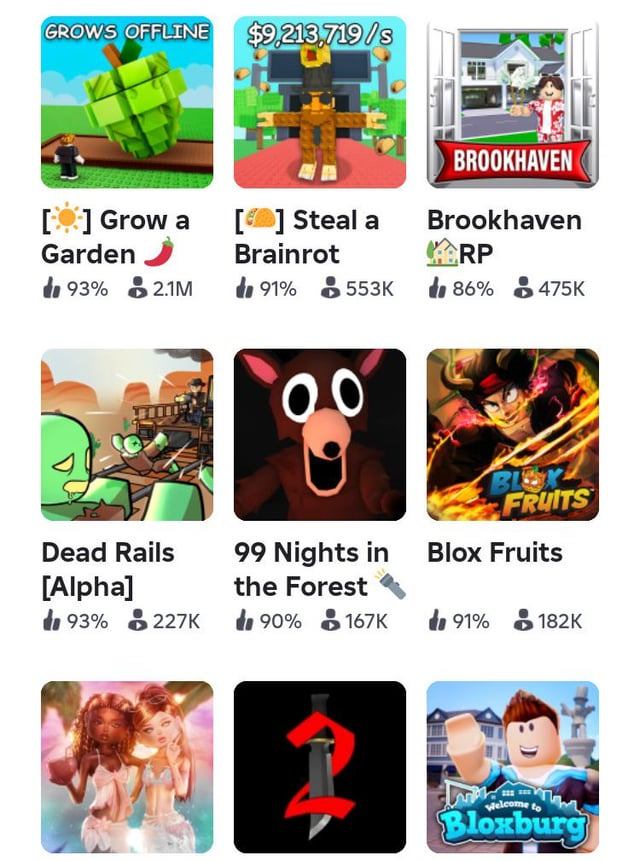
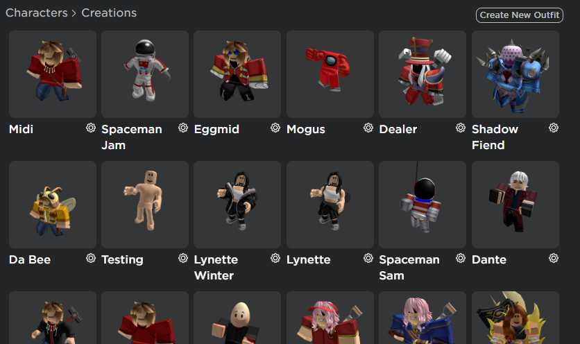

Welcome to Roblox PRO Tips by MOONY™. Most people think Roblox is not a game where you can become an elite player, but we can help you become one by teaching you tips that will improve your gameplay and give you an advantage in many games on the platform. In this lesson, we will focus more on investing Robux and understanding gameplay mechanics.
1. GAMEPLAY IMPROVEMENT
•Use a third-party FPS unlocker to bypass the native 60Hz physics cap.
•Choose the dynamic thumbstick instead of the classic fixed D-pad. It makes movement much easier.
•When you're about to play any game on the app, close background apps and refresh your device to help avoid lag.
2. ROBUX INVESTMENT
•Partner with developers by paying their asset-upload fees. Then, negotiate and secure a percentage of the game's future automated payouts.
•Focus on cheap, event-based, off-sale accessories like eggs that may appreciate in value over several months.
•Monitor platforms like Rolimon's to avoid buying items at inflated prices.
3. GAMES TO PLAY
•Having Robux is one thing, but investing in the right game is another. We will guide you toward games with better returns.
•The best one on this list is "Adopt Me!". It is very active in the market, especially when the value of tradable pets increases.
•Others include: Tycoons, Blox Fruits, Grow a Garden, etc.
•It's your decision to make, but remember to choose wisely.

4. AVATAR DISPLAY
•Styling your avatar is quite important if you want to feel like a pro. We all know about the graphics in Roblox, so making your avatar look good can make the experience feel more realistic from the player's perspective.
•Styling your avatar is also a good way to spend your Robux, but it doesn't provide a tangible return. It's mainly about enjoying and expressing your new look.

EXTRA PRO TIPS
•Join developer groups for free daily boosts.
•Redeem promo codes for free avatar items.
•Save up your Robux for bigger purchases.
•Sign up for MOONIFY™ to access more information in this lesson.
You need more PRO Tips?🔥
•Sign up for MOONIFY™ today!
•Experience Live lessons from our specialists around the world!